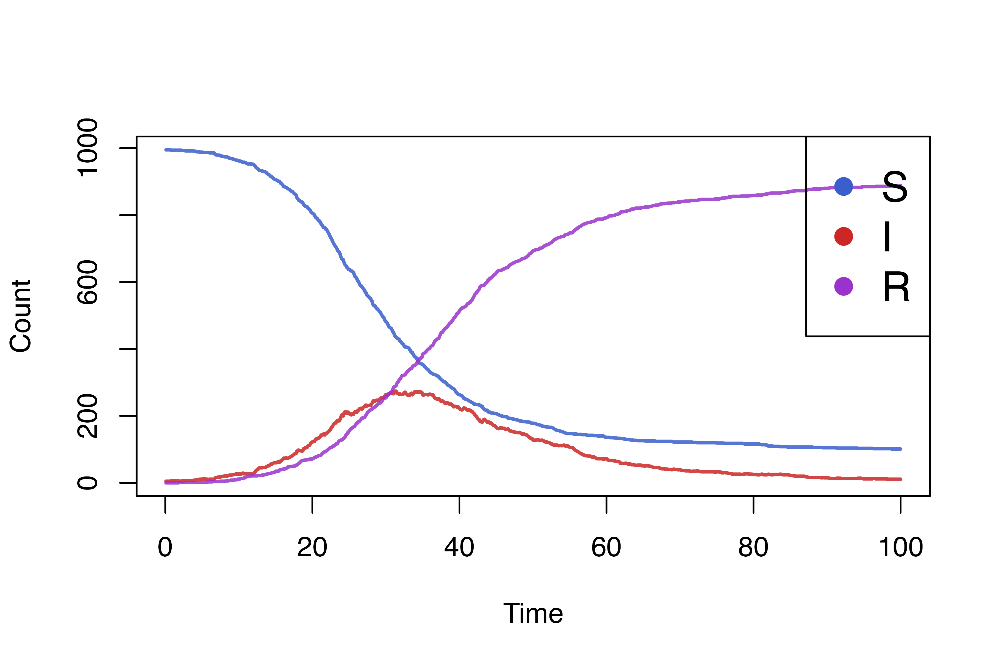

The Susceptible-Infectious-Recovered (SIR) model is the “hello, world!” model for infectious disease simulations, and here we describe how to build it in “individual”. This tutorial will illustrate the use of events, processes, and rendering output.
To start, we should define some constants. The epidemic will be
simulated in a population of 1000, where 5 persons are initially
infectious, whose indices are randomly sampled. The effective contact
rate \(\beta\) will be a function of
the deterministic \(R_{0}\) and
recovery rate \(\gamma\). We also
specify dt, which is the size of the time step \((\Delta t)\). Because individual’s time
steps are all of unit length, we scale transition probabilities by
dt to create models with different sized steps,
interpreting the discrete time model as a discretization of a continuous
time model. If the maximum time is tmax then the overall
number of time steps is tmax/dt.
N <- 1e3
I0 <- 5
S0 <- N - I0
dt <- 0.1
tmax <- 100
steps <- tmax/dt
gamma <- 1/10
R0 <- 2.5
beta <- R0 * gamma
health_states <- c("S","I","R")
health_states_t0 <- rep("S",N)
health_states_t0[sample.int(n = N,size = I0)] <- "I"Next, we will define the individual::CategoricalVariable
which should store the model’s “state”.
health <- CategoricalVariable$new(categories = health_states,initial_values = health_states_t0)In order to model infection, we need a process. This is a function
that takes only a single argument, t, for the current time
step (unused here, but can model time-dependent processes, such as
seasonality or school holiday). Within the function, we get the current
number of infectious individuals, then calculate the per-capita
force of infection on each susceptible person, \(\lambda = \beta I/N\). Next we get a
individual::Bitset containing those susceptible individuals
and use the sample method to randomly select those who will
be infected on this time step. The probability is given by \(1 - e^{-\lambda\Delta t}\). This is the
same as the CDF of an exponential random variate so we use
stats::pexp to compute that quantity. Finally, we queue a
state update for those individuals who were sampled.
infection_process <- function(t){
I <- health$get_size_of("I")
foi <- beta * I/N
S <- health$get_index_of("S")
S$sample(rate = pexp(q = foi * dt))
health$queue_update(value = "I",index = S)
}Now we need to model recovery. For geometrically distributed
infectious periods, we could use another process that randomly samples
some individuals each time step to recover, but we’ll use a
individual::TargetedEvent to illustrate their use. The
recovery event is quite simple, and the “listener” which is added is a
function that is called when the event triggers, taking
target, a individual::Bitset of scheduled
individuals, as its second argument. Those individuals are scheduled for
a state update within the listener function body.
recovery_event <- TargetedEvent$new(population_size = N)
recovery_event$add_listener(function(t, target) {
health$queue_update("R", target)
})Finally, we need to define a recovery process that queues future
recovery events. We first get individual::Bitset objects of
those currently infectious individuals and those who have already been
scheduled for a recovery. Then, using bitwise operations, we get the
intersection of already infectious persons with persons who have not
been scheduled, precisely those who need to have recovery times sampled
and recoveries scheduled. We sample those times from
stats::rgeom, where the probability for recovery is \(1-e^{-\gamma \Delta t}\). Note that we add
one to the resulting vector, because by default R uses a “number of
failures” parameterization rather than “number of trials”, meaning it
would be possible for an individual to be infectious for 0 time steps
without the correction. Finally we schedule the recovery using the
recovery event object.
We note at this point would be possible to queue the recovery event at the same time the infection state update was made, but we separate event and process for illustration of how the package works.
The last thing to do before simulating the model is rendering output
to plot. We use a individual::Render object which stores
output from the model, which is tracked each time step. To do so
requires another process, for which we use the “prefab”
individual::categorical_count_renderer_process.
health_render <- Render$new(timesteps = steps)
health_render_process <- categorical_count_renderer_process(
renderer = health_render,
variable = health,
categories = health_states
)Finally, the simulation can be run by passing objects to the
individual::simulation_loop function:
simulation_loop(
variables = list(health),
events = list(recovery_event),
processes = list(infection_process,recovery_process,health_render_process),
timesteps = steps
)We can easily plot the results by accessing the renderer.
states <- health_render$to_dataframe()
health_cols <- c("royalblue3","firebrick3","darkorchid3")
matplot(
x = states[[1]]*dt, y = states[-1],
type="l",lwd=2,lty = 1,col = adjustcolor(col = health_cols, alpha.f = 0.85),
xlab = "Time",ylab = "Count"
)
legend(
x = "topright",pch = rep(16,3),
col = health_cols,bg = "transparent",
legend = health_states, cex = 1.5
)